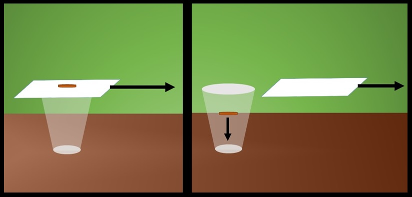
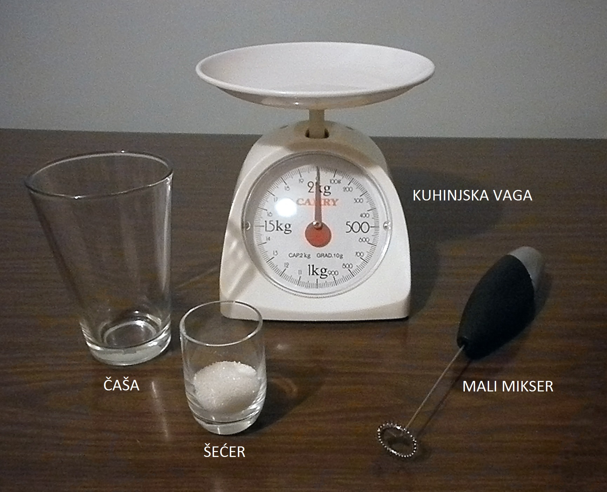
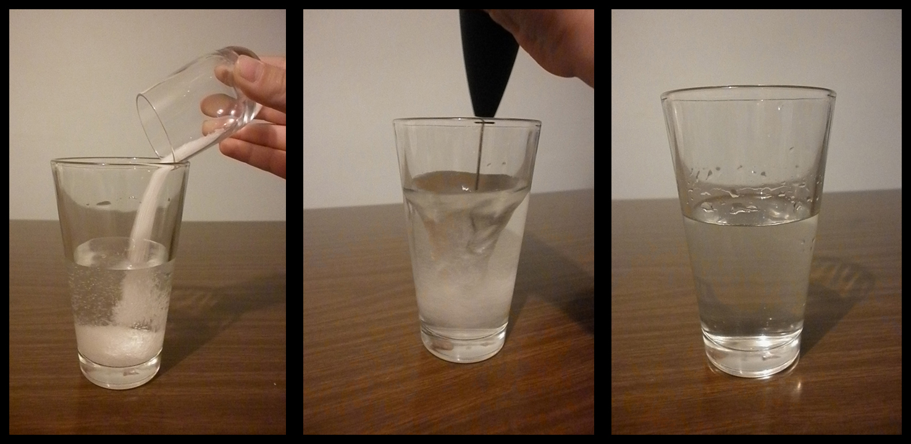
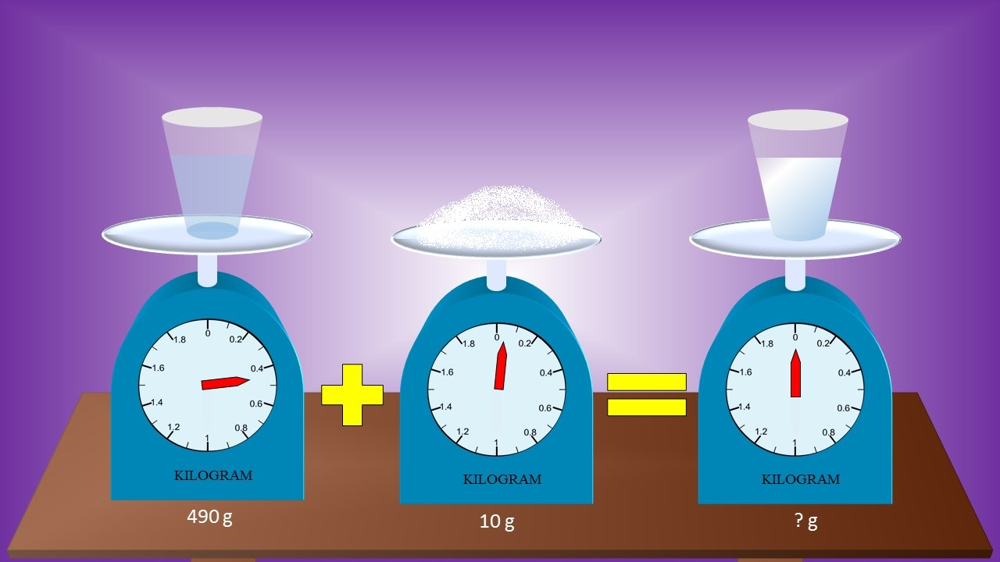

|
Motivacija
Pokus
Rasprava
Tekst i linkovi
Kviz znanja
Pojmovnik
|
Pro�i �emo kroz tri razli�ita pokusa:
- Povla�enje papira - slu�aj prazne �a�e i
nov�i�a
- Povla�enje papira - slu�aj �a�e s vodom
- Otapanje �e�era u vodi
Pribor potreban za prvi pokus:
- prazna �a�a
- nov�i�
- komad papira
Fotografija pribora

Crte� pokusa i kratak opis:
Papir �emo postaviti iznad otvora �a�e i na njega staviti nov�i� te �emo naglo povu�i papir.

Pribor potreban za drugi pokus:
- �a�a s vodom
- komad papira
Fotografija pribora

Crte� pokusa i kratak opis:
Staviti �emo �a�u s vodom na komad papira te naglo rukom povu�i papir.

Pribor potreban za tre�i pokus:
- prazna �a�a koju �emo naknadno napuniti vodom
- �e�er
- kuhinjska vaga
- mali mikser
Fotografija pribora

Crte� pokusa i kratak opis:
Za po�etak �emo izmjeriti masu �e�era, prazne �a�e i �a�e s vodom. �e�er �emo isipati u �a�u s vodom.
Potom �emo uzeti mali mikser i njime mije�ati �e�er i vodu. Nastati �e otopina �e�era i vode.


Film koji obuhva�a sva tri pokusa:
Prisjeti se postavljenih pitanja. Razmisli koji bi mogao biti odgovor na svako pitanje.
Nakon toga, pogledaj sljede�i film i vidi jesi li bio u pravu.
Nadam se da su ti se svidjeli primjeri koje smo obradili. Kako bi
provjerio usvojeno znanje, odaberi link "Rasprave" u meniju.
|